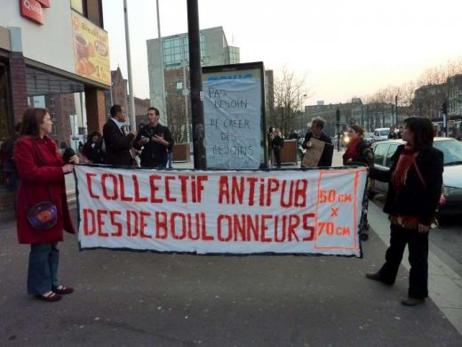
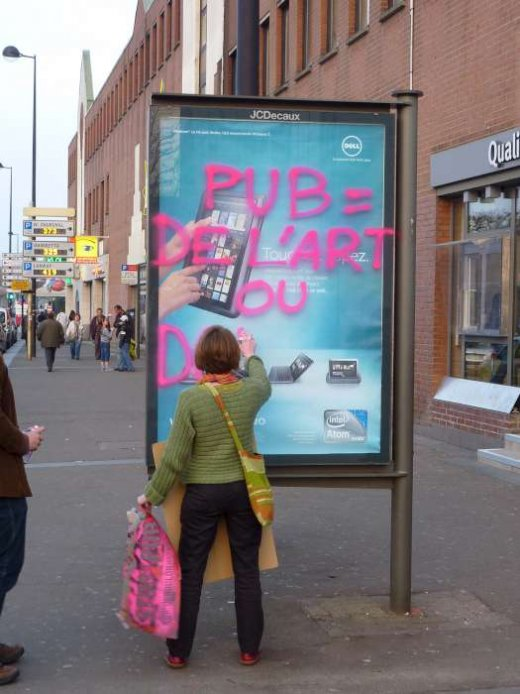
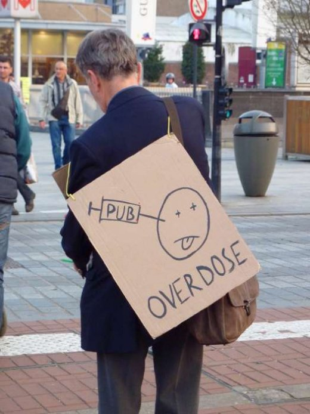
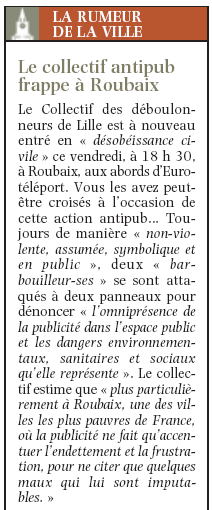

| |
Site dédié à la publication d'informations communiquées par le Collectif des déboulonneurs. En aucun cas ce site n'appelle à des actions illégales. | |
 |
||
|
Accueil du site > Lille > Action du Collectif des Déboulonneurs de Lille – 25 Mars 2011

Résumé de l’action :Date : 25 mars 2011 Heure approximative de l’action elle-même : 18h30 à 19h Lieu précis de l’action : Roubaix, Croisement Boulevard Gambetta / Place de la liberté + Boulevard Gambetta / Rue de Lannoy Nombre de panneaux touchés : 2 sucettes 2m², barbouillées par le pochoir STOP PUB www.deboulonneurs.org + les inscriptions STOP PUB et PUB = DE L’ART OU DOLLAR$ ? (faces culturelles nappées LA PUB, C’EST LA QU’ELLE ATTAQUE – avec le dessin d’un cerveau + PAS BESOIN DE créer DES BESOINS) Propriétaire des panneaux touchés : JC Decaux Nombre d’activistes : 12 Nombre approximatif de journalistes présents : une journaliste de GrandLille.TV Nombre approximatif de policiers : no comment Attitude de la police : passante Retombées média :
Toutes les photos : Portfolio

Compte-rendu plus détaillé :Nous avions choisi pour cette 36ème action du Collectif Lillois de nous rendre à Roubaix, classée « ville la plus pauvre de France », pour dénoncer les conséquences désastreuses du matraquage publicitaire. Nous n’étions qu’une petite quinzaine en tout, dont deux accordéonistes, mais nous avons reçu une attention et un intérêt particulier de la part du public qui s’est arrêté. Des jeunes yamakasi virevoltants devaient nous accompagner et s’approprier les obstacles urbains mais ont préféré s’abstenir à la réflexion. L’action, annoncée au mégaphone, a débuté à 18h30 par le barbouillage d’une première sucette, Boulevard Gambetta, côté Place de la liberté. La banderole des déboulonneurs fut déployée, tandis que la douzaine de membres du collectif se transformaient subitement en hommes et femmes sandwiches avec des messages politiques et non marchands, comme on s’en doute. Aless et Marion ont tour à tour inscrit le traditionnel STOP PUB à l’aérosol, sans oublier le pochoir STOP PUB www.deboulonneurs.org, puis Maxime s’est chargé de coller la nappe sur l’autre face (LA PUB, C’EST LA QU’ELLE ATTAQUE, accompagné du dessin d’un cerveau) Puis la troupe a traversé en musique la place de la station de métro Eurotéléport pour rejoindre l’autre côté du Boulevard Gambetta, où fut barbouillé l’autre sucette, en face d’un fast-food, aux abords d’un centre commercial ! Cette fois fut apposé le message « PUB = DE L’ART OU DOLLAR$ ? » et « PAS BESOIN DE créer DES BESOINS » sur la nappe, sur l’autre face. Helena puis Alain ont pris la parole pour expliquer les raisons de notre présence dans cette ville économiquement sinistrée et pourtant riche humainement et culturellement. Nous avons aussi entonné la Petite histoire de la Publicité, accompagnés par les musiciens, avant de clore l’action, ne voyant toujours pas l’ombre d’une interpellation en vue, malgré le passage de la police. A noter la présence de GrandLille.TV. Nous n’avons pas fait masse, mais l’on peut dire que ce fut une action réussie !


Voix du Nord Roubaix Dimanche 27 mars 2011
|
|
Site utilisant SPIP - Hébergement Ouvaton
|